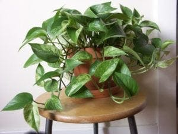

Potts, ivy, or Abd al-Wahhab's heart, Epipremnum aureum, is called in most of the nurseries the inner ink plant, and it is one of the indoor ornamental plants that can be successfully cultivated at temperatures exceeding 30 degrees Celsius. Its original home is the Solomon Islands.
It has many species, often differing in the colors of the leaves and the degree of coloration and pigmentation in light colors, such as the Marble Queen Boots, which is one of the beautiful plants, especially if used in hanging pots, where its branches hang with its beautiful leaves, and it is one of the The most successful indoor ornamental plant, so it is often used inside homes and offices in dry areas, especially with its large availability and in different sizes that can be placed on tables or shelves or even as a large plant between home or office furniture. Yellow dots and streaks add flair, and they are easy to handle and care for. For example, the long branches of it can be wrapped on plastic wires and extended in different parts of the room or office to fill the place with its leaves and appear as a climbing plant. It is one of the best plants for beginners in plant care, as it bears various conditions and environments and does not require much care.